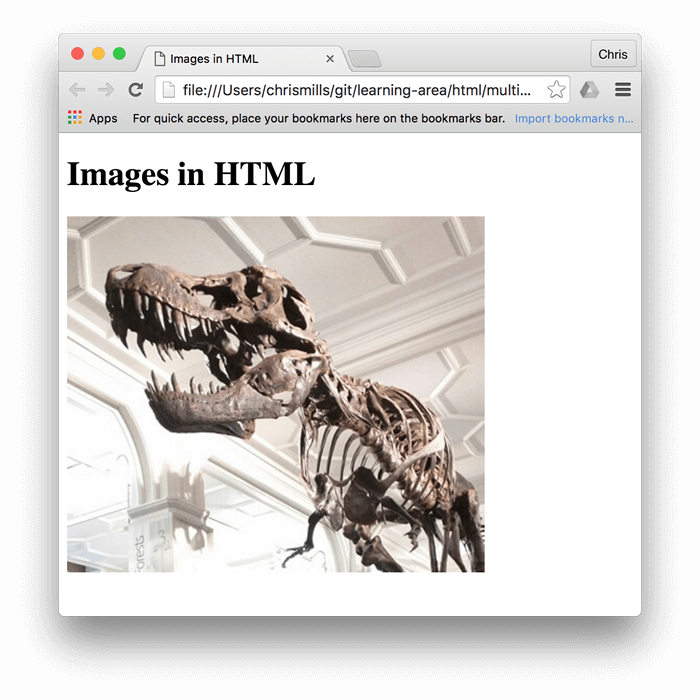

Imagenes
Ideas Principales.
- Etiqueta img
- Se pueden colocar imagenes de internet o ubicada en una carpeta
- Se pueden colocar imagenes que esten en una diferente carpeta a donde se encuentre el index
- Las imagenes se pueden ajustar
Apuntes de Clase.
Etiqueta img
Las imagenes en la web no solo sirven por cuestiones esteticas, las imagenes cuentan historias, ayudan a los buscadores a indexar las paginas, brindan a los usuarios confianza y una buena experiencia.
Si la imagen y el archivo HTML no se encuentran en la misma carpeta, la ruta se escribe de la siguente forma
